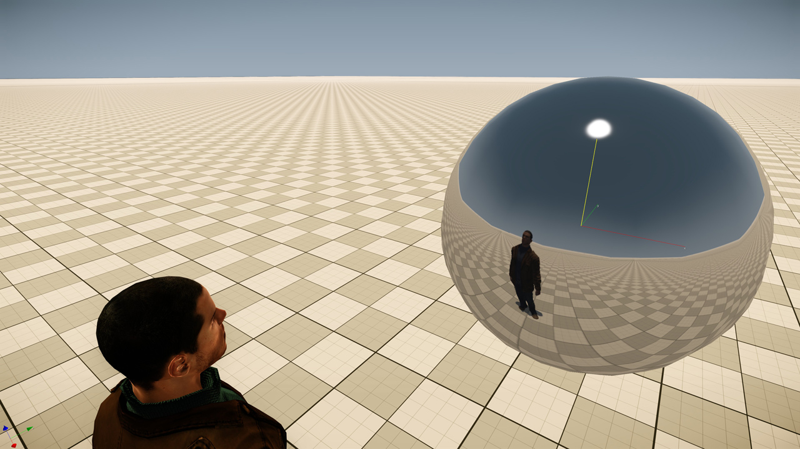
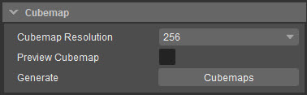
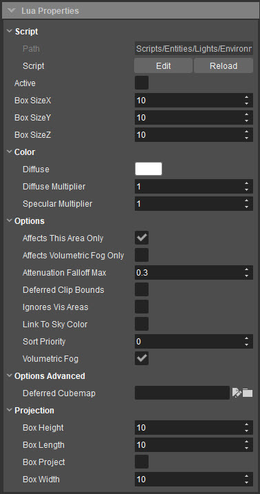
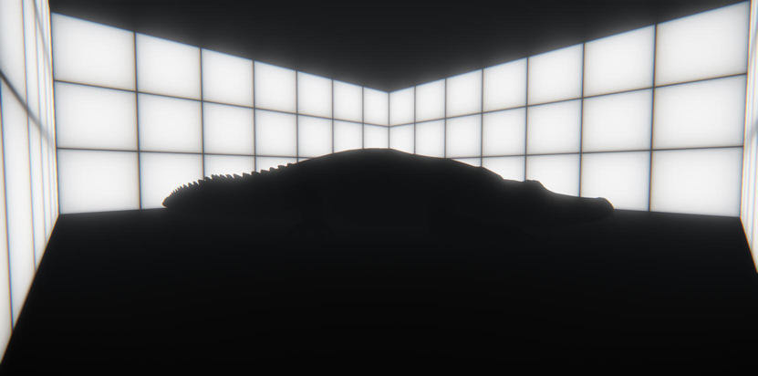
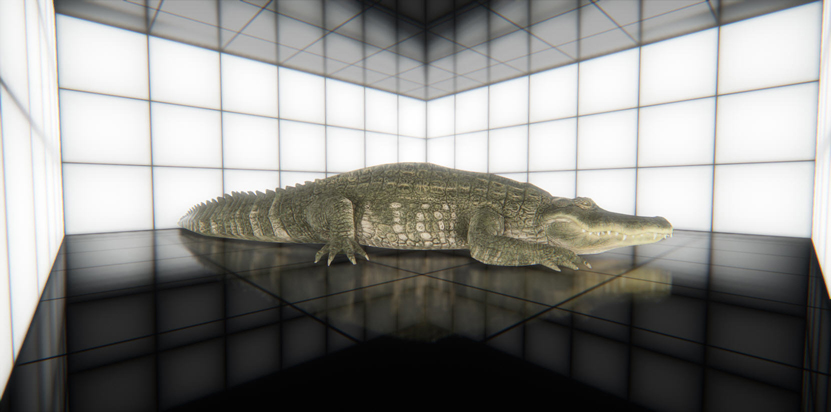
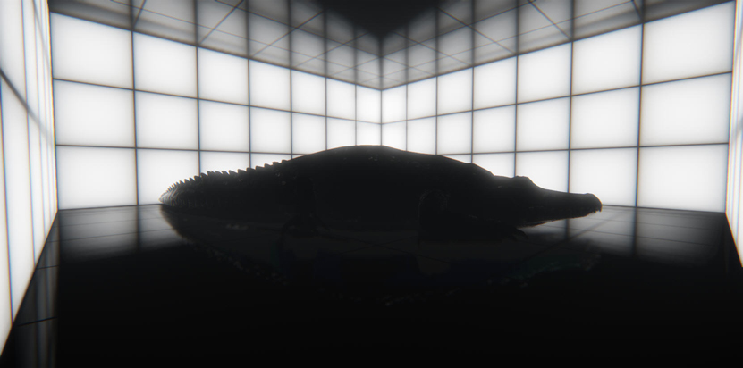
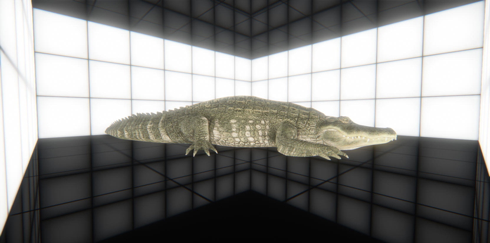
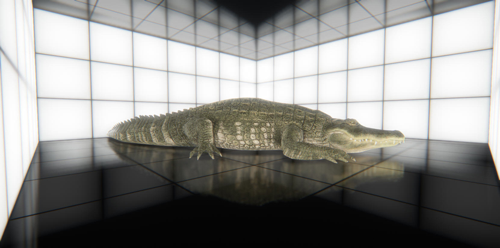

Обзор
С помощью Environment Probes у вас есть возможность легко размещать кубические карты по всему уровню так же, как если бы вы размещали свет. Это очень полезно, особенно с отражающими материалами, поскольку автоматически присваивает кубическую карту всему, что находится в пределах ее радиуса.
Этот инструмент может быть полезен и при использовании с динамическим освещением; просто требуется небольшая настройка Flow Graph, чтобы различные датчики, используемые в разных ситуациях, переходили плавно.
Благодаря физически основанному затенению кубические карты теперь управляют многими вещами в движке. Все: от цветов теней, значений окружающего рассеяния, рассеяния частиц и отражений. Они действуют как отраженный свет, беря цвета из окружающей среды и применяя их непосредственно к рассеянному материалу внутри своего радиуса.
Настройка
Загрузив уровень в Sandbox, выберите Создать объекты → Разное → Зонд среды.
После выбора Зонда окружающей среды переместите курсор в область просмотра в нужное положение и поместите «Зонд окружающей среды» на свой уровень. Вы можете настроить местоположение так же, как и для любого объекта.
С новым тайловым затенением в CRYENGINE все кубические карты должны иметь разрешение 256.. Создаваемое изображение представляет собой изображение HDR с плавающей запятой и имеет гораздо более высокую точность, чем раньше.
Генерация кубической карты
Имя файла текстуры всегда будет меняться на имя объекта Environment Probe. Поэтому хорошей идеей будет дать имя вашему зонду сразу, прежде чем вы начнете что-либо генерировать. Когда вы сгенерируете, вы получите 2 текстуры: одна будет информацией о рассеянном освещении, а другая — картой отражения.
На панели свойств в разделе «Кубическая карта» щелкните значок Создать кубическую карту кнопка.
Это создаст изображение кубической карты Tif в: Textures\cubemaps\<LevelDirectory>\<EnvironmentProbeName_cm>.tif

Обычно датчик окружающей среды следует размещать на высоте головы, чтобы обеспечить правильное отражение.
Глобальные зонды кубической карты
Для начала каждый уровень должен иметь глобальную кубическую карту. Это специальная кубическая карта, которая действует как карта по умолчанию/резервная. Как правило, вам нужна только одна глобальная кубическая карта для каждого уровня.
Наличие глобального зонда на вашем уровне гарантирует, что у вас всегда будет доступна активная кубическая карта. Любые «локальные» зонды автоматически сортируются по более высокому приоритету в пределах определенного радиуса и сливаются с «глобальным» зондом.
Чтобы сделать кубическую карту глобальной кубической картой, необходимо выполнить всего несколько специальных настроек:
- Убедитесь, что он охватывает весь уровень, установив BoxSizeXYZ значения достаточно высоки.
- Установите SortPriority до 0.
- Установить AttenuationFalloffMax до 0.
- Установить IgnoreVisAreas к истине.


Свойства зонда окружающей среды
Параметры кубической карты | |
|---|---|
Разрешение кубической карты | Это позволяет вам настроить разрешение сгенерированной кубической карты, чтобы обеспечить хороший баланс между качеством и использованием памяти. |
Предварительный просмотр кубической карты | Установите этот флажок, чтобы увидеть изменение зонда на сферу по умолчанию с примененной и визуализированной кубической картой. |
Создать кубическую карту | Создает кубическую карту для выбранного в данный момент зонда среды. |
Свойства зонда окружающей среды | |
Активный | Включает/выключает сущность. |
Размер коробки X, Y и Z | Определяет размеры X, Y и Z области действия зондов окружающей среды. |
Цвет | |
Цвет | Здесь можно указать рассеянный цвет света. |
Диффузный множитель | Чтобы сделать свет ярче, можно использовать диффузный множитель. |
Зеркальный множитель | Увеличивает яркость зеркального цвета. Используйте для регулировки яркости. |
Опции | |
Влияет только на эту область | Установите для этого параметра значение false, чтобы осветить другую область видимости. |
Влияет только на объемный туман | Будет ли этот зонд влиять на объемный туман. |
Макс. спад затухания | Управляет величиной спада (0–1) для создания более плавных переходов или резких границ, что может быть полезно при внутреннем освещении. |
Отложенные границы клипа | |
Игнорирует области видимости | Управляет тем, должен ли свет реагировать на зоны обзора. |
Ссылка на цвет неба | |
Сортировать по приоритету | Дает контроль над тем, какой зонд должен иметь более высокий приоритет. |
Объемный туман | Этот зонд будет только влияют на объемный туман. |
Опции Расширенные | |
Отложенная кубическая карта | Указывает расположение текстуры кубической карты. |
Проекция | |
Высота коробки | Регулирует высоту поля кубической карты. |
Длина коробки | Регулирует длину кубической карты. |
Коробка активная | Необходимо проверить, чтобы включить. |
Ширина коробки | Регулирует ширину кубической карты. |
Настройка зондов окружающей среды
Материалы с высокой отражающей способностью рекомендуется использовать в сочетании с SSR (отражения в пространстве экрана), поскольку они обеспечивают локализованные отражения в реальном времени.
Нет SSR и нет зонда окружающей среды. 
Следующий пример был составлен с использованием метода блочной проекции SSR с помощью Environment Probe. Обратите внимание, как сетка точно выровнена с фигурами. При изменении проекции блока имейте в виду, что появляется ограничивающая зеленая рамка, и соответствующим образом настройте размер. 
На этом экране отображается SSR, но проверка среды не включена. Обратите внимание на локализованные отражения, расположенные по краям и углам. 
Нет SSR с включенным BoxProject. Датчик среды соответствует размеру комнаты. 
SSR со сферическим зондом окружающей среды. Этот аспект не так точен, но в менее отражающих областях этот вариант может быть проще использовать. 